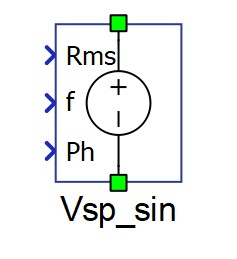
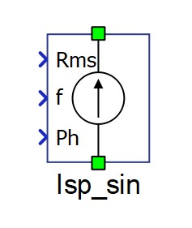
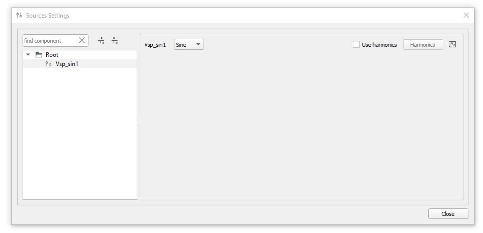
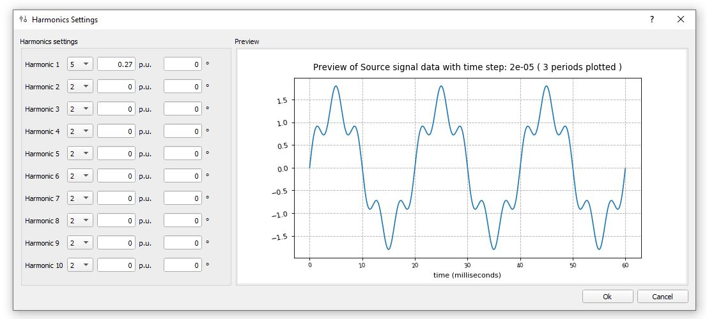
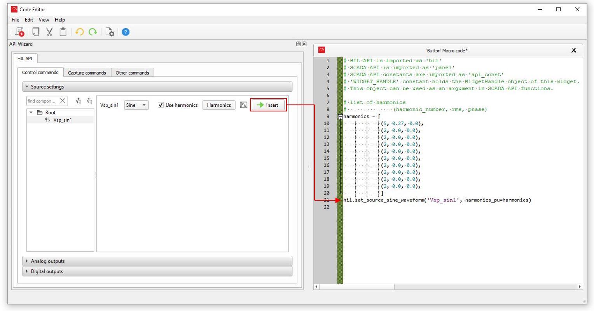

Signal Controlled Sinusoidal Sources
Description of the Signal Controlled Sinusoidal Voltage Source components and the Signal Controlled Sinusoidal Current Source components in Schematic Editor


Signal Controlled Sinusoidal Voltage Source and Signal Controlled Sinusoidal Current Source components in Typhoon HIL Schematic Editor can be single or three phase components depending on the chosen Number of phases property value on the component's mask.
Single Phase Signal Controlled Sinusoidal Sources
Single Phase Signal Controlled Sinusoidal Sources (voltage and current) have two electrical ports for connecting with the electric circuit and three signal processing input ports. Values of the signal controlled sinusoidal source are defined through signal processing input ports. The Rms input defines the RMS value, the f input defines the frequency, and the Ph input defines the initial phase of the desired sinusoidal signal.
Three Phase Signal Controlled Sinusoidal Sources
Three Phase Signal Controlled Sinusoidal Sources (voltage and current) have four electrical ports for connecting with the electric circuit and three signal processing input ports. Four available electric ports: A, B, and C - electric ports for the three phases; N - electric port for the three phase source neutral point. Values of the signal controlled sinusoidal source are defined through signal processing input ports. All of the signal processing input ports are vectors with the dimension of 3. The Rms input defines the list of RMS phase A, RMS phase B, and RMS phase C sinusoidal signal values. The f input defines the list of phase A frequency, phase B frequency, and phase C sinusoidal signal frequency values. The Ph input defines the list of initial phase values for phase A, phase B, and phase C of the desired sinusoidal signal.
The update rate of the source components is at the full resolution simulation rate. The Execution rate field is related to the signal processing control components or sub-circuits connected to the input ports.
In cases where a slower update rate is accepted (such as for constant sources), a Signal Controlled Sources component can be used instead.
Harmonics settings for real-time simulation
The harmonics for a signal controlled sinusoidal source can be specified and modified at simulation runtime (either from HIL SCADA or HIL API).
In HIL SCADA, independent sources can be specified in the sources section of the Model settings (Figure 3). The harmonics of the signal controlled sinusoidal source can be specified by clicking the Harmonics button of the corresponding source, which opens the Harmonics settings window (Figure 4).
The Preview of the source waveform displays the specified higher harmonics when applied to a per-unit representation of the source waveform with a sample fundamental frequency of 50 Hz.


Sources can also be specified through HIL API, for example in the code of HIL SCADA Action
widgets. Harmonics for the signal controlled sinusoidal source can be assigned through the HIL
API function set_source_sine_waveform(name, harmonics_pu). This function can be
easily inserted from the API Wizard window by clicking the Insert button
(Figure 5).

It is recommended to call this API function in the given form and omit the optional input
arguments rms, frequency, and phase, as these
would overwrite the signal processing control inputs of the component for the first simulated
signal processing timestep.
Ports
- p (electrical)
- Available if Number of phases is set to 1.
- Positive port.
- n (electrical)
- Available if Number of phases is set to 1.
- Negative port.
- A (electrical)
- Available if Number of phases is set to 3.
- Phase A port.
- B (electrical)
- Available if Number of phases is set to 3.
- Phase B port.
- C (electrical)
- Available if Number of phases is set to 3.
- Phase C port.
- N (electrical)
- Available if Number of phases is set to 3.
- Neutral point port.
- Rms (in)
- For Single Phase Signal Controlled Sinusoidal Sources, the RMS of the desired sinusoidal signal.
- For Three Phase Signal Controlled Sinusoidal Sources, the Rms input defines the list of RMS phase A, RMS phase B, and RMS phase C sinusoidal signal values.
- f (in)
- For Single Phase Signal Controlled Sinusoidal Sources, the f input defines the frequency of the desired sinusoidal signal.
- For Three Phase Signal Controlled Sinusoidal Sources, the f input defines the list of phase A frequency, phase B frequency, and phase C sinusoidal signal frequency values.
- The frequency is limited between 0.1 Hz and 10 kHz.
- Ph (in)
- For Single Phase Signal Controlled Sinusoidal Sources, the Ph input defines the initial phase of the desired sinusoidal signal.
- For Three Phase Signal Controlled Sinusoidal Sources, the Ph input defines the list of initial phase values for phase A, phase B, and phase C of the desired sinusoidal signal.
Properties
- Number of phases
- Defines voltage/current source number of phases.
- Execution rate
- Execution rate of the signal processing control components or sub-circuits connected to the input ports of the voltage/current source.